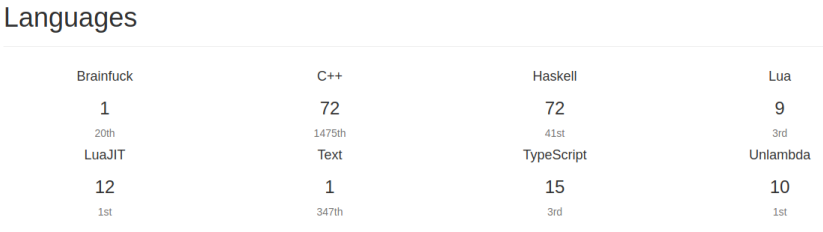

Yuchiki
プログラマーをしています。
Profile
History
- 2020-01 - 株式会社KADOKAWA Connected
- 2019-04 - 2019-12 株式会社ドワンゴ
- 2017-04 - 2019-03 東京大学大学院情報理工学系研究科
- 2015-04 - 2017-03 東京大学理学部情報科学科
- 2013-04 - 2015-03 東京大学理科一類
自然言語たち
- 日本語: 母語
- 英語: 少し
- ラテン語: 基礎文法は理解
プログラミング言語とツールたち
業務経験
- Golang
- Ruby
- Coffee Script
- Ruby on Rails
- haml
- scss
- Kubernetes
- Ansible
- Jenkins
趣味で経験
大学の授業、会社の研修で経験
- Scala
- C
- PowerPC Assembly
- Scheme
- OCaml
- Haskell
- VHDL
- Python
Hello World、Fizz Buzz程度の経験
- TypeScript
- VB6
- VB.net
- JavaScript
- Brainf*ck
- Unlambda
- Lua
- MIPS Assembly
- Common Intermediate Language (dotnet VM Assembly)
-
F*
興味・関心
コンピュータ科学
- 型理論
- 形式検証
- 数理論理学
- 言語設計
- 言語処理系
- C#
言語・言語学(上ほど興味強し)
- 形式意味論
- 生成文法
- 音声学
- 音韻論
- 比較言語学
- 歴史言語学
- ラテン語
その他
- 日本民謡・歌謡
- 西洋民謡・歌謡
- クラシック
- 美術展・博物展
- 浪曲
- 街歩き
アカウント類
- Twitter
-
@yuchiki1000yen
- Github
-
yuchiki
- Qiita
-
yuchiki1000yen
- Blog
-
Amosapientiam
AtCoder
始めたばっかりです。

画像はKenkoooo.comより
icon
iconは八ヶ岳から撮った雲海です。